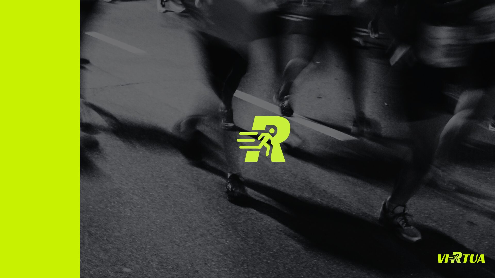
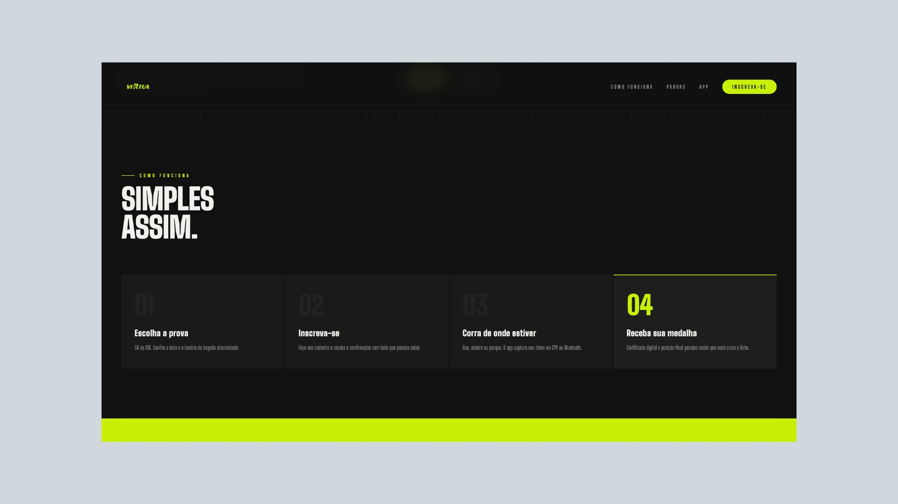
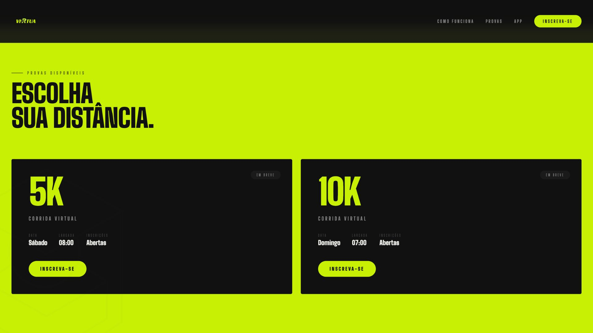
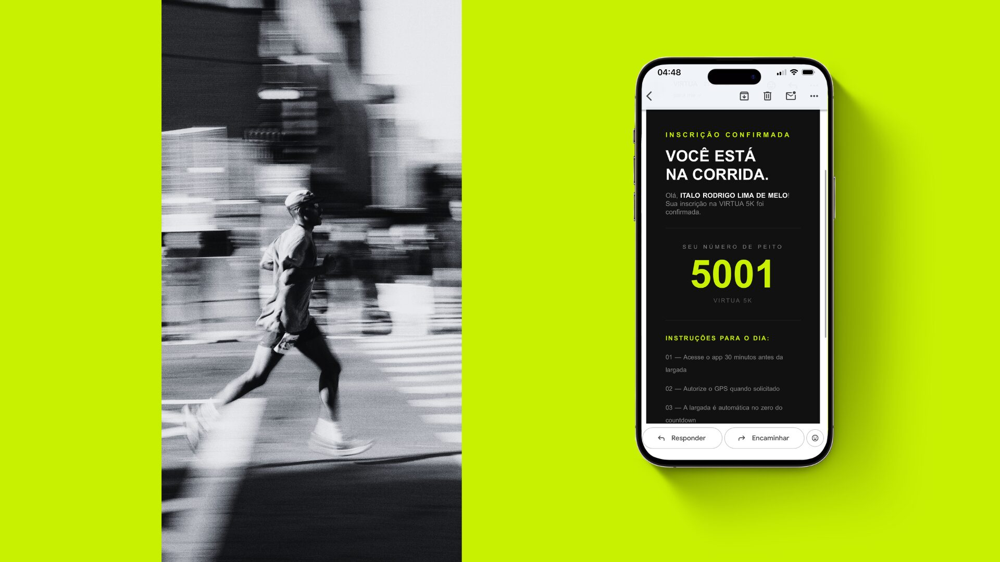
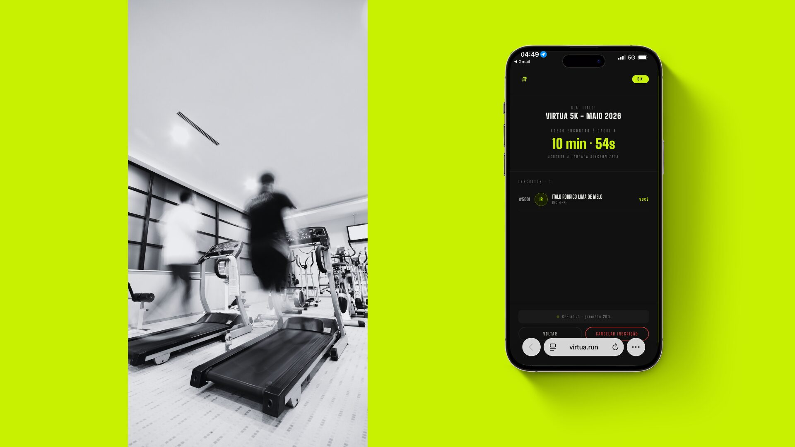
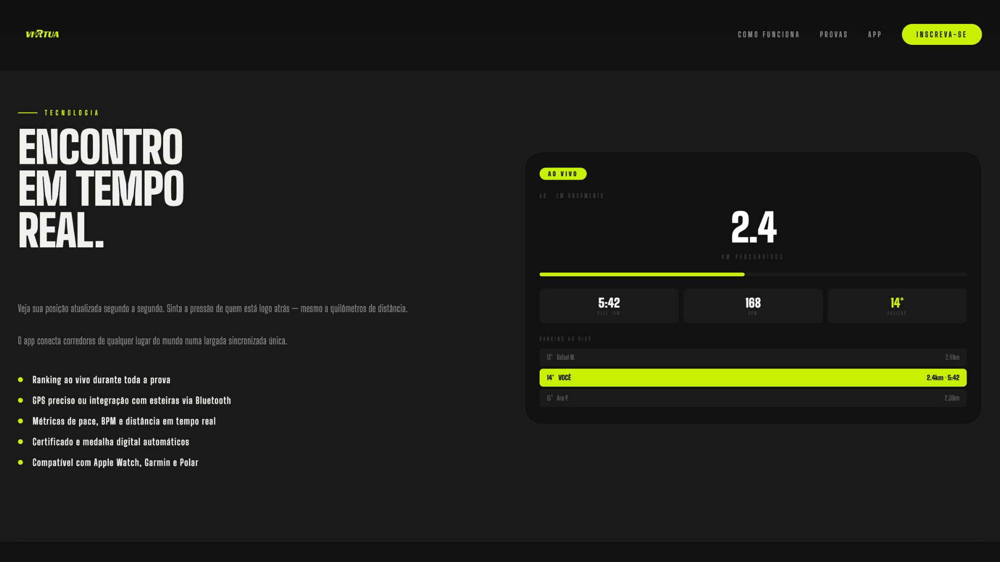
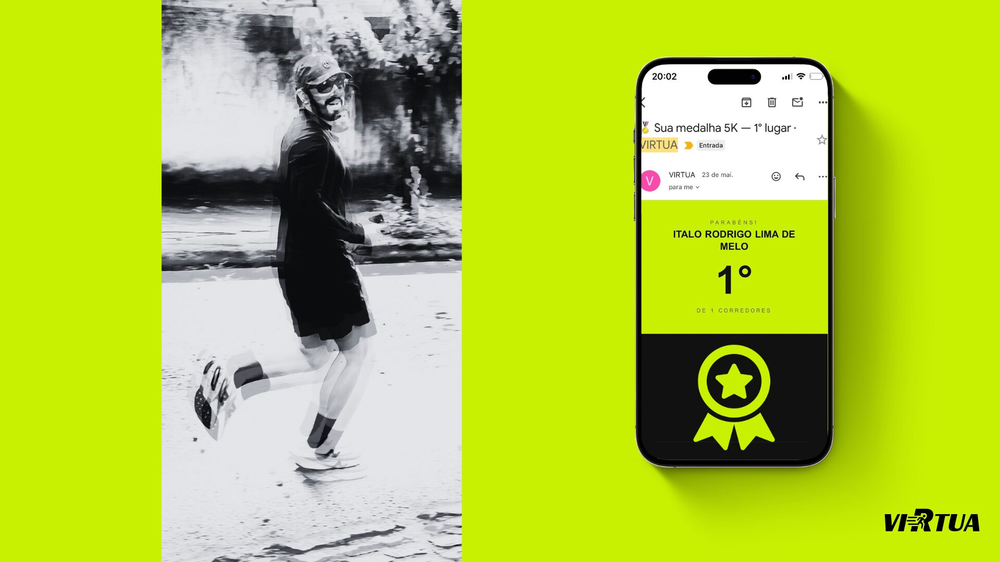

VIRTUA é uma plataforma de corridas virtuais sincronizadas: corredores em cidades diferentes largam no mesmo segundo e disputam um ranking ao vivo.

Corrida virtual costuma ser só "corra quando quiser e mande o print". A VIRTUA traz de volta o que faz a prova de rua ser prova: hora marcada, número de peito, adversário logo atrás e medalha na chegada. Isso vale pra quem corre na rua, no parque ou na esteira.
Cada ponto de contato foi pensado como numa prova presencial, mas sem sair de casa.

As provas de 5K e 10K vêm com data, horário de largada e status das inscrições, tudo puxado em tempo real.

A inscrição confirmada gera o número de peito na hora (5001 em diante no 5K, 1001 no 10K) e manda as instruções para o dia da prova.

Uma contagem regressiva ao vivo mostra os inscritos e o GPS ativo. No zero, a largada é automática e todo mundo sai junto.

Distância, pace e posição atualizam segundo a segundo. O corredor sente a pressão de quem está logo atrás, mesmo estando a quilômetros dele.

Ao cruzar a linha, o corredor recebe a medalha digital e a colocação final por e-mail, prontas pra compartilhar.

A tecnologia da VIRTUA virou uma experiência gamificada para um treino de rua em Recife. O corredor segue a rota e desbloqueia badges ao chegar em cada ponto, validado por GPS.
Do conceito ao produto publicado com domínio próprio: banco de dados em tempo real, e-mails transacionais automáticos e deploy contínuo.